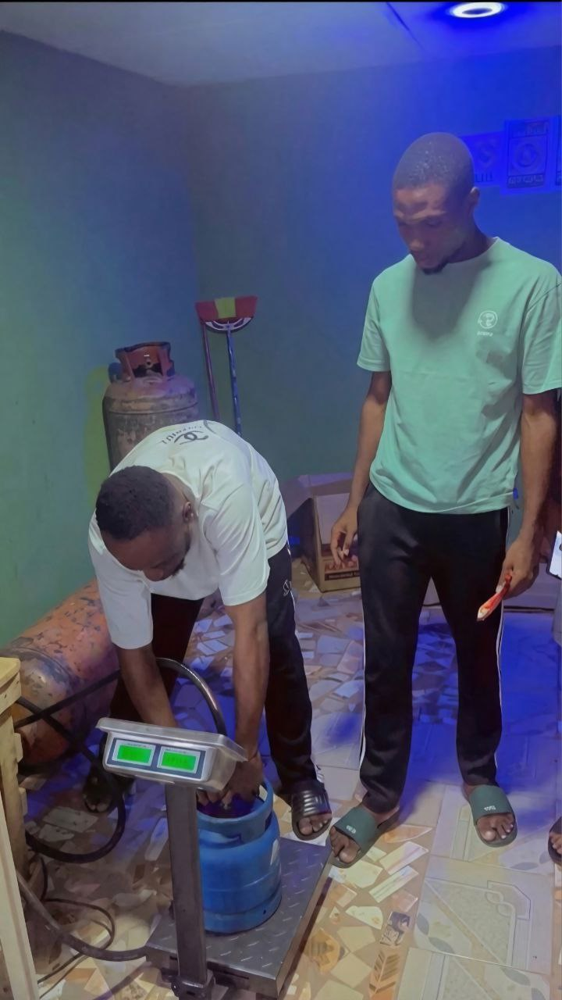
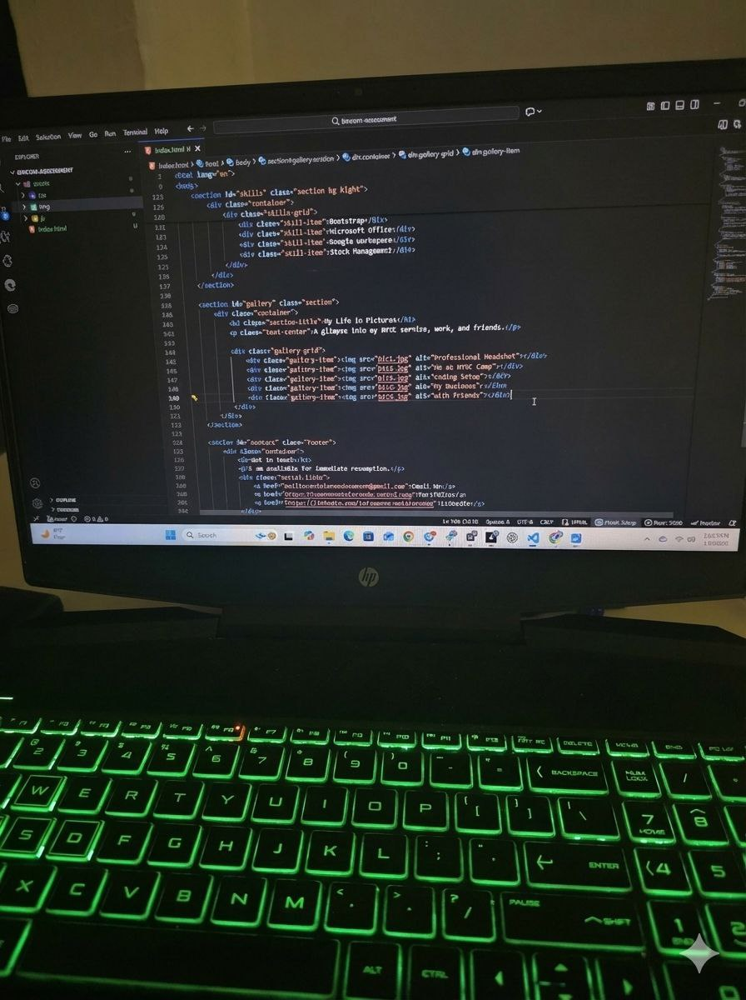
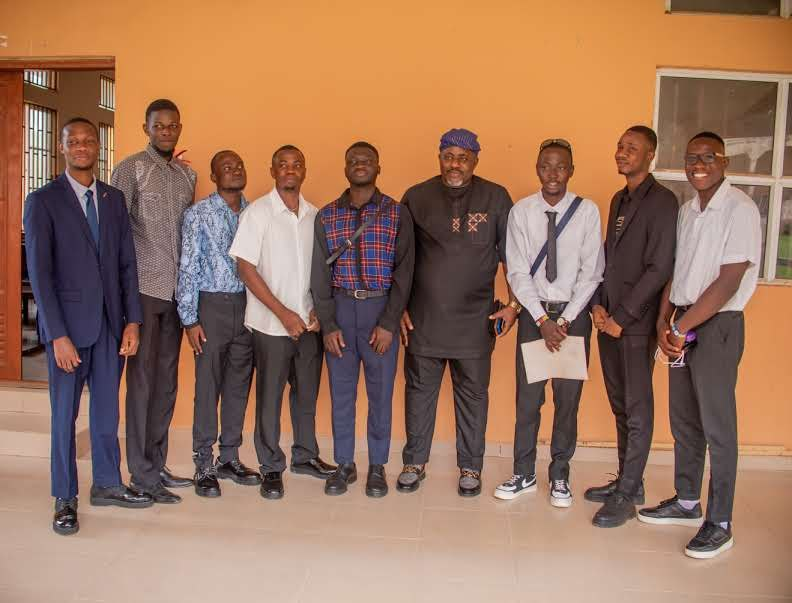

NYSC Corps Member | Front-End Developer
Bridging the gap between Operations and Technology.
Hire MeI am a hardworking and tech-savvy NYSC Corps Member serving in Lagos, seeking a role as a Logistics Trainee. I have a unique background: I run a small logistics business (cooking gas supply), and I am also a trained Front-End Developer.
This combination means I understand the physical work of moving goods, but I also have the advanced technical skills to handle data, automate reports, and use software better than the average trainee. I am humble, ready to learn, and looking for a company where I can use my physical and mental energy to support the team.
National Youth Service Corps (NYSC) | Lagos | June 2025 - Present
BTB Cooking Gas Solutions | Lagos | 2022 - Present
Krystal Klean Solution (UK) | Remote
Product Hub Africa | 2025
Completed intensive training in Front-End technologies and Version Control (Git/GitHub).
Adekunle Ajasin University, Akungba-Akoko, Nigeria | 2019 - 2024
A glimpse into my NYSC service, work, and friends.


